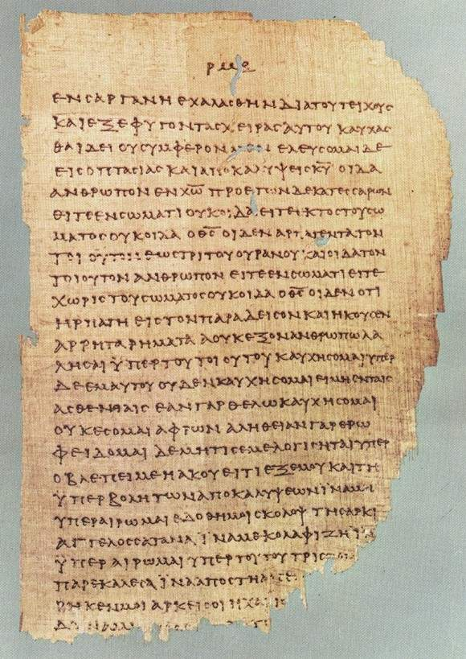

Jézus Krisztus
Názáreti Jézus vagy Jézus Krisztus, gyakran csak Jézus vagy Krisztus (Betlehem, i. e. 7 körül – Jeruzsálem, i. sz.33 körül) a kereszténység központi alakja, a világtörténelem egyik legismertebb és legnagyobb hatású személye.

Názáreti Jézus vagy Jézus Krisztus, gyakran csak Jézus vagy Krisztus (Betlehem, i. e. 7 körül – Jeruzsálem, i. sz.33 körül) a kereszténység központi alakja, a világtörténelem egyik legismertebb és legnagyobb hatású személye.
Az Újszövetség vagy Újtestamentum a keresztény Biblia második része. Az Újszövetséget az első rész, az Ószövetség (Héber Biblia) nélkül nehéz lenne értelmezni.
A kereszténység (a magyarországi protestáns hívők szóhasználatában gyakran keresztyénség) egyistenhívő vallás, amelynek középpontjában Jézus Krisztus élete, halála, feltámadása és tanításai állnak, ahogy az az Újszövetségben szerepel, illetve ahogyan azt az egyes felekezetek magyarázzák. Több mint kétmilliárd hívőjével a legelterjedtebb világvallás.

Keresztény nézőpontból az Egyház az Istentől természetfölötti módon elhívott, Jézus Krisztusban hívő, újjászületett emberek összessége: a magyarul egyháznak fordított szó az Újszövetség eredeti nyelvében, a görögben eklészia (= kihívottak közössége). Eszerint az Egyház Jézus Krisztus tulajdona, amelyet ő épít és irányít.